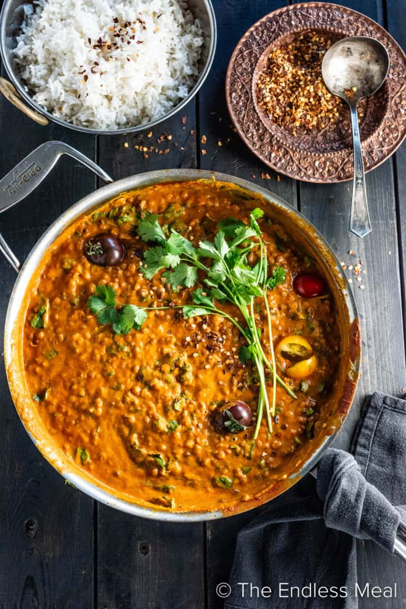

Steven's Lentils

Image from The Endless Meal.
Description
A creamy, tomato- and coconut-milk based lentil curry, delicious over rice or millet. Easy to make. A Sherwood classic!
Ingredients
- 2 tbs. coconut oil
- 1 tbs. cumin seed
- 1 tbs. coriandar seed
- 10ish cloves garlic, minced
- 2 tbs. ginger, minced
- 1 tbs. turmeric
- 2 tsp. salt
- 1 large can crushed tomato
- 1.5 c. green lentils
- 3 c. water
- 1 small can coconut milk
- cilantro, chopped, for garnish
Steps
- In a dutch oven or similarly sized pot, heat the coconut oil. Then add the cumin and corindar seed and heat for about 30 seconds.
- Add the garlic, and heat for another 30 seconds or so.
- Add the tomatoes, turmeric, ginger, and salt. Let simmer for a few minutes.
- Add the lentils and water. Simmer until lentils are fully cooked -- 30-40 minutes. If they start to dry out, add a little more water.
- Add the coconut milk, stir, and heat for a few more minutes.
- Serve over rice or millet, garnished with the cilanto.
Back to Homepage